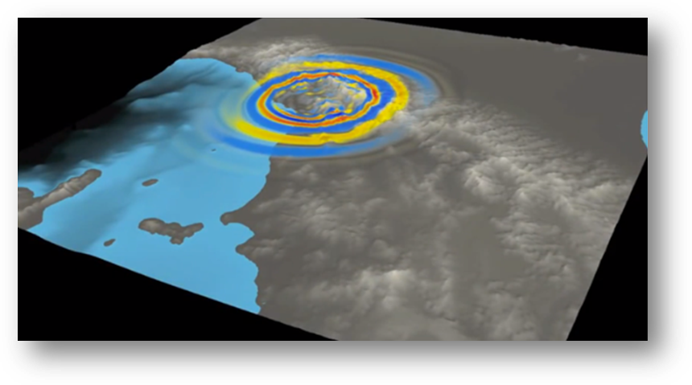

1. Introduction to the VERCE platform¶
The VERCE portal is an online resource that allows large scale, 3D full waveform simulations to be easily run on a variety of high performance computers, and the associated large data sets to be managed easily. This resource is designed to make the ever increasing potential of full waveform seismological techniques available to a much wider spectrum of seismology and earthquake science communities.
This guide provides a brief description of the science and technologies behind the VERCE portal, and a step by step guide to using the portal. The written description of each step is complemented by online tutorial videos and presentations, and provides a stepping off point for users who want to use other tools supported by VERCE such as ‘Obspy’, a python toolbox for dealing with seismic data, and ‘Dispel4Py’, a python toolbox designed to manage large data sets in seismology (and other disciplines). The resources supported by VERCE should then enable a seismologist of any specialism run large scale waveform simulations for an area of interest, and deal with large seismological data sets.
VERCE – Virtual Earthquake and seismology Research Community e-science environment in Europe - is an EU infrastructure project extending from 2011 and 2015, and the development of the VERCE portal has been a collaborative project involving a wide range of project partners from across the EU. VERCE was a major contribution to the e-science environment of the European Plate Observing System (EPOS), which is presently supporting further developments and updates of the VERCE platform.

Figure 1.1: A snapshot of a simulation of the Ml 5.2 Lunigiana earthquake which occurred on the 21st June 2013 in Northern Italy. Image produced by the INGV.